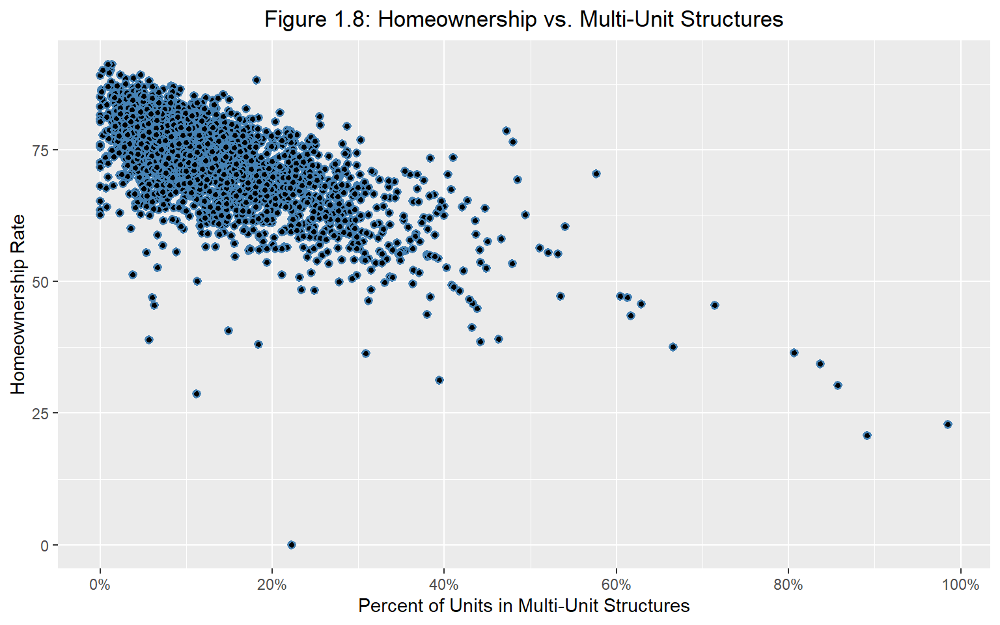
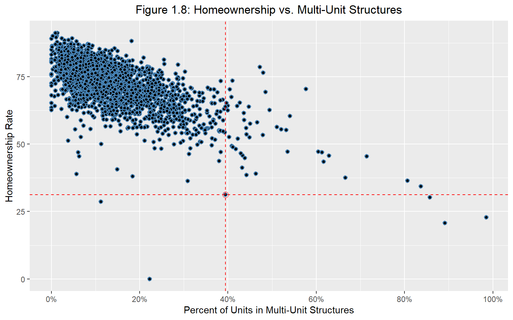
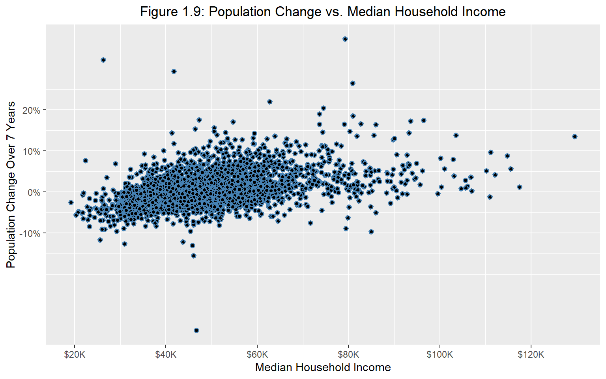
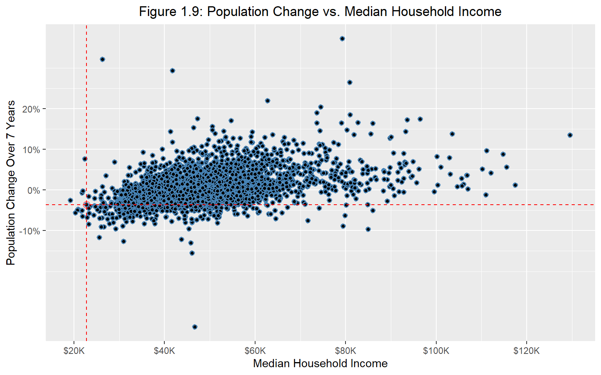
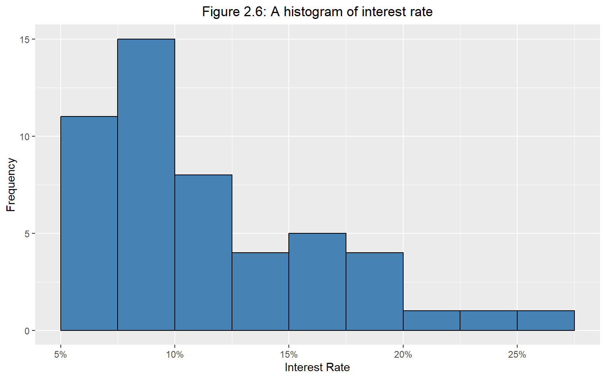
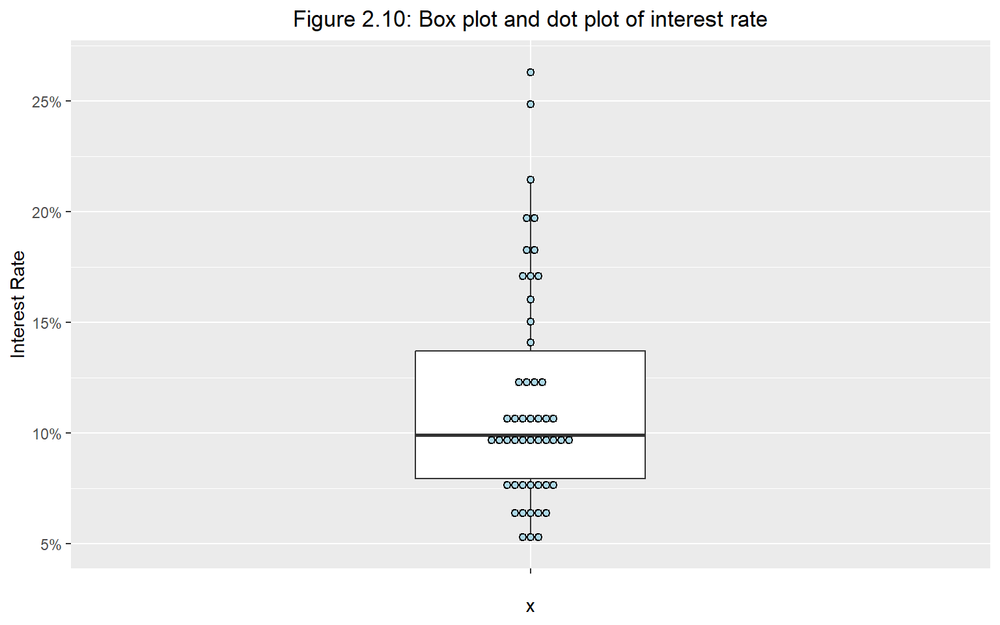
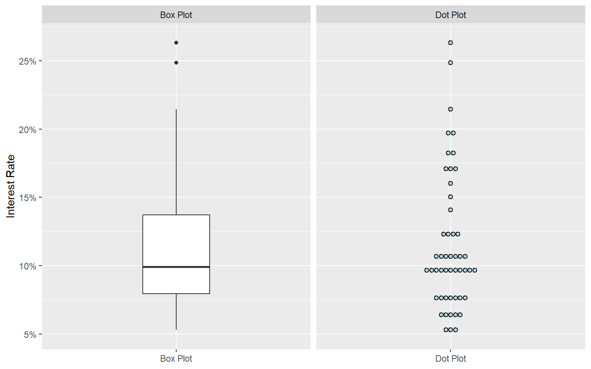
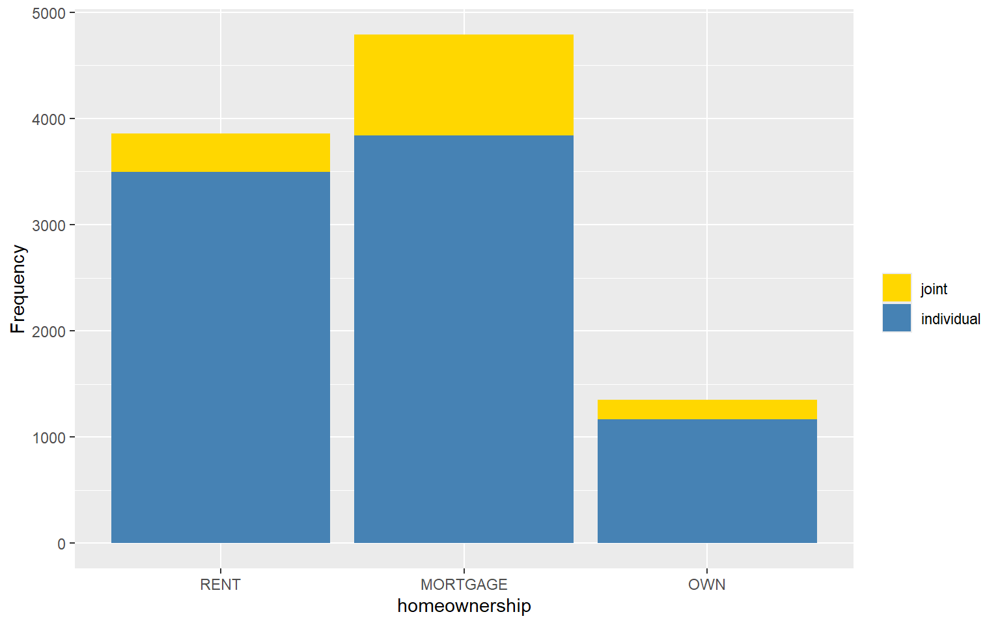
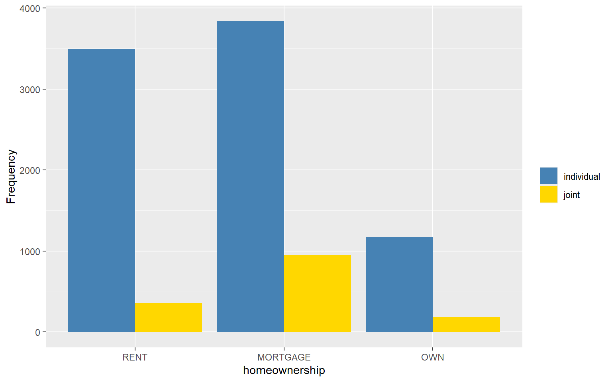
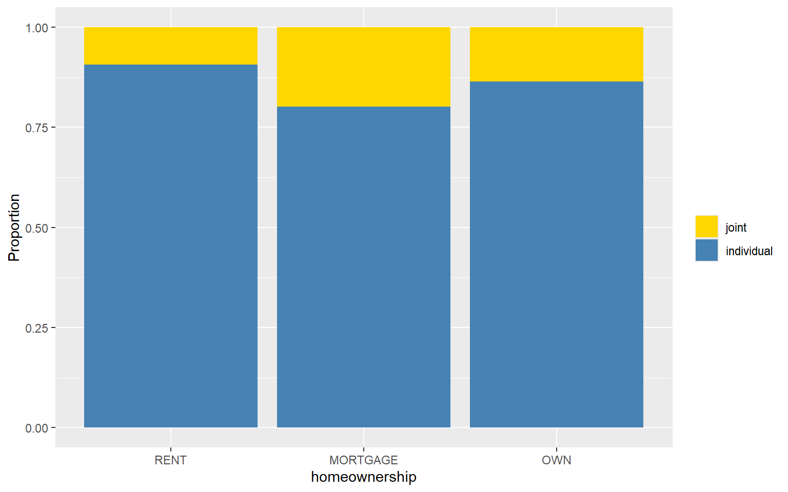

Homework 1 Answers
If you find any typos or errors, please feel free to contact me via email at r13323002@ntu.edu.tw. I would appreciate it and will correct the solution to prevent any misunderstandings.
For some R commands marked with ‘OPTIONAL,’ you don’t need to learn them. You will be completely fine on the computer quiz even if you choose to ignore them.
If you’re having trouble understanding the code, don’t hesitate to ask me for help. I’ll do my best to assist you during office hours or after the TA session.
# import package
rm(list = ls())
library(tidyverse)
# set directory and import data
county <- read.csv("data/county.csv") # for fig 1.8, 1.9
loan50 <- read.csv("data/loan50.csv") # for fig 2.6, 2.10
loan <- read.csv("data/loans_full_schema.csv") # for fig 2.17, 2.18, 2.231 Computer Exercises
1.1 Figure 1.8: Scatter Plot
# draw the scatter plot
scatter_plot_1 <- ggplot(county, aes(x = multi_unit, y = homeownership)) +
## adjust the points
geom_point(color = "steelblue", fill = "black", shape = 21, stroke = 0.9) +
## add labels and graph title to make the graph readable
labs(
x = "Percent of Units in Multi-Unit Structures",
y = "Homeownership Rate",
title = "Figure 1.8: Homeownership vs. Multi-Unit Structures"
) +
## center the title text
theme(plot.title = element_text(hjust = 0.5)) +
## adjust the scale of x, y-axis
scale_x_continuous(
breaks = c(0, 20, 40, 60, 80, 100),
labels = c("0%", "20%", "40%", "60%", "80%", "100%")
) +
scale_x_continuous(
breaks = c(0, 20, 40, 60, 80, 100),
labels = c("0%", "20%", "40%", "60%", "80%", "100%")
)
# show the plot
scatter_plot_1# highlight point at (31.3, 39.4)
highlight_point_1 <- data.frame(
homeownership = 31.3,
multi_unit = 39.4
)
# highlighting the point
scatter_plot_1_hl <- scatter_plot_1 +
## add highlight point circle
geom_point(data = highlight_point_1, aes(x = multi_unit, y = homeownership), color = "red", size = 3, shape = 1) +
## add both vertical and horizontal dash lines
geom_vline(xintercept = highlight_point_1$multi_unit, linetype = "dashed", color = "red") +
geom_hline(yintercept = highlight_point_1$homeownership, linetype = "dashed", color = "red")
# show the plot
scatter_plot_1_hl
1.2 Figure 1.9: Scatter Plot
# draw the scatter plot
scatter_plot_2 <- ggplot(county, aes(x = median_hh_income, y = pop_change)) +
## adjust the points
geom_point(color = "steelblue", fill = "black", shape = 21, stroke = 0.9) +
## add labels and graph title to make the graph readable
labs(
x = "Median Household Income",
y = "Population Change Over 7 Years",
title = "Figure 1.9: Population Change vs. Median Household Income"
) +
## center the title text
theme(plot.title = element_text(hjust = 0.5)) +
## adjust the scale of x, y-axis
scale_x_continuous(
labels = c("$0K", "$20K", "$40K", "$60K", "$80K", "$100K", "$120K"),
breaks = seq(0, 120000, by = 20000)
) +
scale_y_continuous(
breaks = c(-10, 0, 10, 20),
labels = c("-10%", "0%", "10%", "20%")
)
# show the plot
scatter_plot_2
# highlight point at (22736, -3.63)
highlight_point_2 <- data.frame(
median_hh_income = 22736,
pop_change = -3.63
)
# highlighting the point
scatter_plot_2_hl <- scatter_plot_2 +
## add highlight point circle
geom_point(data = highlight_point_2, aes(x = median_hh_income, y = pop_change), color = "red", size = 3, shape = 1) +
## add both vertical and horizontal dash lines
geom_vline(xintercept = highlight_point_2$median_hh_income, linetype = "dashed", color = "red") +
geom_hline(yintercept = highlight_point_2$pop_change, linetype = "dashed", color = "red")
# show the plot
scatter_plot_2_hl
1.3 Figure 2.6: Histogram
ggplot(loan50, aes(x = interest_rate)) +
## plot the histogram (OPTIONAL: `boundary` specify the location of edge for each bin)
geom_histogram(binwidth = 2.5, fill = "steelblue", color = "black", boundary = 5) +
## other adjustments
labs(
x = "Interest Rate",
y = "Frequency",
title = "Figure 2.6: A histogram of interest rate"
) +
scale_x_continuous(
labels = c("5%", "10%", "15%", "20%", "25%"),
breaks = c(5, 10, 15, 20, 25)
) +
theme(plot.title = element_text(hjust = 0.5))
1.4 Figure 2.10: Box Plot & Dot Plot
# draw the graph by two different ways: box plot, and dot plot
box_dot_plot_raw <- ggplot(loan50, aes(x = "", y = interest_rate)) +
## draw the box plot, dot plot, and overlap them together
geom_boxplot(width = 0.3) +
geom_dotplot(binaxis = 'y', stackdir = 'center', dotsize = 0.5, fill = "lightblue") +
labs(
y = "Interest Rate",
title = "Figure 2.10: Box plot and dot plot of interest rate"
) +
## adjust the scale and range of y-axis
scale_y_continuous(
labels = c("5%", "10%", "15%", "20%", "25%"),
breaks = seq(5, 25, by = 5)
) +
## adjust the graph title and x-axis title
theme(plot.title = element_text(hjust = 0.5))
# show the plot
box_dot_plot_raw
1.4.1 (OPTIONAL) How to separate the box plot and dot plot beautifully?
Since we haven’t introduced facet command, this should be leaved optional.
# create two distinct dataset for dot/box graph, and append them together
## data for dot plot
loan_data_plot_dot <- loan50 %>%
mutate(plot_type = "Dot Plot")
## data for box plot
loan_data_plot_box <- loan50 %>%
mutate(plot_type = "Box Plot")
## append together
loan_data_combined <- bind_rows(loan_data_plot_dot, loan_data_plot_box)
# Draw two graphs separately with `facet` command
box_dot_plot <- ggplot(loan_data_combined, aes(x = plot_type, y = interest_rate)) +
## dot plot and box plot
geom_dotplot(data = loan_data_combined %>% filter(plot_type == "Dot Plot"),
binaxis = 'y',
stackdir = 'center',
dotsize = 0.5,
fill = "lightblue",
position = position_dodge(width = 0.4)
) +
geom_boxplot(data = loan_data_combined %>% filter(plot_type == "Box Plot"),
width = 0.3,
position = position_dodge(width = 0.9)
) +
## other adjustments
labs(
y = "Interest Rate",
x = NULL,
title = NULL
) +
scale_y_continuous(
labels = c("5%", "10%", "15%", "20%", "25%"),
breaks = seq(5, 25, by = 5)
) +
theme(
axis.title.x = element_blank(),
plot.title = element_text(hjust = 0.5)
) +
## (!!) utilize `facet_wrap` command to align the graphs by using variable "plot_type"
facet_wrap(~plot_type, scales = "free_x")
# show the plot
box_dot_plot
1.5 Figure 2.17: Contingency Table
table1 <- table(loan$application_type, loan$homeownership,
dnn = c("app_type", "homeownership"))
table1_withsum <- addmargins(table1)
table1_withsum homeownership
app_type MORTGAGE OWN RENT Sum
individual 3839 1170 3496 8505
joint 950 183 362 1495
Sum 4789 1353 3858 100001.6 Figure 2.18: Frequency Table
table2 <- table(loan$homeownership)
table2_withsum <- addmargins(table2)
table2_withsum
MORTGAGE OWN RENT Sum
4789 1353 3858 10000 1.7 Figure 2.23: Bar Graph
# (OPTIONAL) adjust the order
loan$application_type <- fct_relevel(loan$application_type, "joint", "individual")
loan$homeownership <- fct_relevel(loan$homeownership, "RENT", "MORTGAGE", "OWN")
# plot a: stacked bar
ggplot(loan, aes(x = homeownership, fill = application_type)) +
geom_bar() +
labs(
y = "Frequency",
fill = ""
) +
scale_fill_manual(
values = c("individual" = "steelblue", "joint" = "gold")
)
# (OPTIONAL) adjust the order
loan$application_type <- fct_relevel(loan$application_type, "individual", "joint")
loan$homeownership <- fct_relevel(loan$homeownership, "RENT", "MORTGAGE", "OWN")
# plot b: dodged bar
ggplot(loan, aes(x = homeownership, fill = application_type)) +
geom_bar(position = "dodge") +
labs(
y = "Frequency",
fill = ""
) +
scale_fill_manual(
values = c("individual" = "steelblue", "joint" = "gold")
)
# (OPTIONAL) adjust the order
loan$application_type <- fct_relevel(loan$application_type, "joint", "individual")
loan$homeownership <- fct_relevel(loan$homeownership, "RENT", "MORTGAGE", "OWN")
# plot c: standard stacked bar
ggplot(loan, aes(x = homeownership, fill = application_type)) +
geom_bar(position = "fill") +
labs(
y = "Proportion",
fill = ""
) +
scale_fill_manual(values = c("individual" = "steelblue", "joint" = "gold"))
data.frame(
mean = c(mean(loan$annual_income), mean(loan$total_credit_lines)),
median = c(median(loan$annual_income), median(loan$total_credit_lines)),
sd = c(sd(loan$annual_income), sd(loan$total_credit_lines)),
q25 = c(quantile(loan$annual_income, .25), quantile(loan$total_credit_lines, .25)),
q75 = c(quantile(loan$annual_income, .75), quantile(loan$total_credit_lines, .75)),
row.names = c("annual_income", "total_credit_line")
)1.8 Summary Statistics Table
mean median sd q25 q75
annual_income 79222.1484 65000 64734.29049 45000 95000
total_credit_line 22.6796 21 11.88544 14 292 Textbook Exercise
2.1 Question 1.4
The research question is: “Do asthmatic patients who practice the Buteyko method experience improvement in their condition?”
The cases are 600 adult patients aged 18–69 years diagnosed and currently treated for asthma.
The variables are whether or not the patient practiced the Buteyko method (categorical) and measures of quality of life, activity, asthma symptoms, and medication reduction of the patients (categorical, ordinal). It may also be reasonable to treat the ratings on a scale of 0 to 10 as discrete numerical variables.
2.2 Question 1.10
Each row of the data matrix represents a participant in the survey.
There are 1,691 participants in the survey.
The table below lists the types of variables included in the study:
| Variable | Type |
|---|---|
| sex | categorical |
| age | numerical, continuous |
| maritalStatus | categorical |
| grossIncome | ordinal* |
| smoke | categorical |
| amtWeekends | numerical, discrete |
| amtWeekdays | numerical, discrete |
* Note that income is a continuous numerical variable, but in this survey, it is recorded as an ordinal variable.
2.3 Question 1.22
- Observational.
- No. Because the study is observational, we cannot infer causation.
- Possible confounders: caffeine intake and lack of sleep. Either could explain the observed association between stress and muscle cramps (e.g., students may cramp due to increased caffeine use or insufficient sleep).
2.4 Question 1.34
- Randomized experiment. Sampling is stratified by age; treatment is assigned at random.
- Treatment: those assigned to exercise twice a week.
Control: those instructed not to exercise. - Yes. The blocking variable is age group; randomization is carried out within each block.
- Participants cannot realistically be blinded to whether they exercise. Blinding of outcome assessors is possible but not described. As written, the study is not blinded and could be subject to placebo/Hawthorne/observer effects.
- Because of random assignment, a causal effect of exercise on the measured mental-health outcome can be inferred for the study participants (and, with blocking done well, within age groups). Generalization depends on how the stratified sample was obtained; if it’s a good probability sample of the target population of 18–55-year-olds, results generalize to that population. Otherwise, external validity is limited.
- Pre-register outcomes, blinded-trials, ensure adequate sample size, record potential time-varying confounders.
2.5 Question 1.38
- Simple random sampling: effective — gives every household equal probability of selection.
- Stratified sampling: effective — neighborhoods are distinct; stratifying ensures sampling from each neighborhood.
- Cluster sampling: not effective — sampling whole neighborhoods would miss households from some areas, and neighborhoods differ greatly.
- Multi-stage sampling: suffers from the same issue as (c).
- Convenience sampling: not effective — yields a biased sample (e.g., only nearby/similar neighborhoods; misses distant ones).
2.6 Question 1.40
- Explanatory variable: percent of the population with a bachelor’s degree.
Response variable: per-capita income (in thousands).
- Relationship: strong positive linear association — as the bachelor’s-degree percent increases, per-capita income tends to increase. Few counties exceed 60% bachelor’s degree or $50k per-capita income.
- Causality: observational study; no causal claim. We can only say higher bachelor’s-degree share is associated with higher per-capita income.
2.7 Question 2.12
Median is around 80. Because the distribution is left-skewed, the mean is expected to be slightly lower than the median.
2.8 Question 2.22
- Percent identifying as conservatives
372 / 910 ≈ 40.9%. - Percent favoring “apply for citizenship”
278 / 910 ≈ 30.6%. - Percent who are conservatives and favor citizenship
57 / 910 ≈ 6.3%. - Among each ideology, percent who favor citizenship
Conservatives: 57 / 372 ≈ 15.3%.
Moderates: 120 / 363 ≈ 33.1%.
Liberals: 101 / 175 ≈ 57.7%. - Do ideology and immigration views appear independent?
No. If independent, the percent favoring citizenship would be about the same across ideologies; the conditional percents differ widely (15%, 33%, 58%), indicating association.
2.9 Question 2.30
- If \(\dfrac{\bar{x}}{\mathrm{median}} = 1\), then \(\bar{x}=\mathrm{median}\). This matches symmetric distributions.
- If \(\dfrac{\bar{x}}{\mathrm{median}} < 1\), then \(\bar{x}<\mathrm{median}\). This matches left-skewed distributions (lower values pull the mean down).
- If \(\dfrac{\bar{x}}{\mathrm{median}} > 1\), then \(\bar{x}>\mathrm{median}\). This matches right-skewed distributions (higher values pull the mean up).
2.10 Question 2.34
- Histogram: overall shape (including bimodality) and density are apparent, while these are not visible in a box plot.
Box plot: median, quartiles (IQR), and identification of outliers are explicit, while these are harder to read from the histogram. - Plausibly two groups with systematically different times: men vs women.
- Women’s finishing times are generally higher than men’s, with a larger median and typically greater spread (IQR). Men’s times are lower on average and a bit less variable.
- A downward trend over years and the changing gap between men and women. It highlights temporal patterns that a single histogram/box plot, which aggregates over time, cannot show.